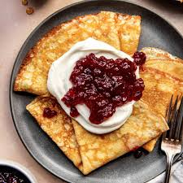

Swedish Pancake
Go back

Description
Very similar to crepes, Swedish pancakes are lighter and thinner than regular
pancakes. They have have more milk than flour and more eggs and butter.
Ingredients
- 3 eggs
- 1 ¼ cups milk
- ¾ cup all-purpose flour
- 1 tablespoon white sugar
- ½ teaspoon salt
- 1 tablespoon butter, or as needed
Steps
-
Beat eggs in a bowl with an electric mixer until thick and
lemon-colored, 3 to 5 minutes.
-
Stir in milk inside the previous mixture.
-
Sift together flour, sugar, and salt in a separate bowl.
Add to egg mixture; mix until batter is smooth.
-
Grease a griddle with butter; heat over medium heat. Drop
tablespoonfuls of batter on the griddle; spread to make thin
pancakes.
-
Cook until light brown on bottom, 1 to 2 minute
-
Flip and continue cooking until second side is light brown,
1 to 2 minutes more. Repeat with remaining batter.
Go back